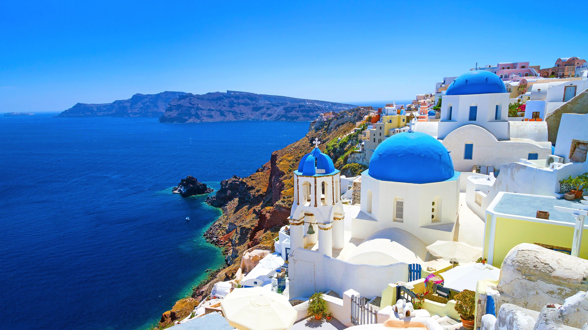

산토리니섬 그리스 에게 해 남부에 자리잡은 작고 둥근 모양의 화산 군도이며, 그리스 본토와는 약 200km 정도 떨어져 있다.
키클라데스 제도의 최남단에 자리잡고 있다.
이 섬은 지구 역사상 거대한 화산으로 손꼽히는 지역이다. 약 3,600년 전 미노아 문명의 절정기에 미노아 화산 분출(혹은 테라 화산 분출)이 일어났다. 이 분출로 거대한 칼데라가 생기고, 주변에 수백 피트의 화산재가 쌓였으며, 이 사건으로 거대한 쓰나미가 일어나 산토리니 남쪽 110km에 있는 크리티 섬의 미노아 문명이 몰락하는데 간접적으로 영향을 주었을 것이다. 이와 관련된 다른 흥미로운 가설로는 테라 화산 분출이 아틀란티스의 전설을 낳았다는 이야기가 있다.